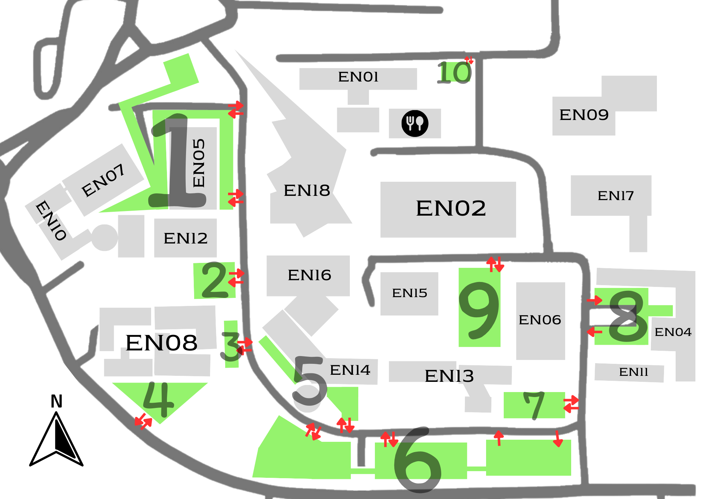

ENKKU Navigation
Home
Map
Contact us

1. ที่จอดภาคเกษตร
2. ที่จอดหน้าตึกเพียรวิจิตร
3. ที่จอดหน้าภาคอุตสาหการ
4. ที่จอดหลังภาคอุตสาหการ
5. ที่จอดตึกภาคเคมี
6. ที่จอดตรงข้ามคณะสาธารณสุข
7. ที่จอดภาคสิ่งแวดล้อม
8. ที่จอดตึกภาคคอมพิวเตอร์และไฟฟ้า
9. ที่จอดรถภาคโยธา
10. ที่จอดลานโพธื์(หลังภาค ARIS)